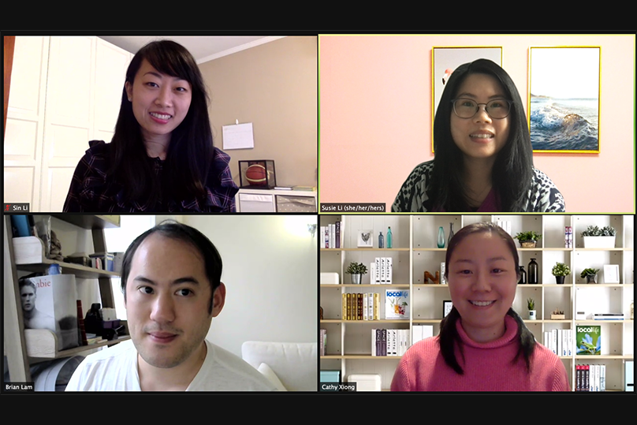

Susie S. Li
Publications
MfA Teacher Voices: "It is Time for a Change"
Click on It is Time for a Change to read the full article.
Presentations
Computer Science Teacher Con 2021
During the 2021 Computer Science Teacher Con, I had the opportunity to present on a topic that resonated deeply with educators facing the challenges of remote teaching and learning. Specifically, I shared insights and strategies on creating coding templates and instructional videos tailored to teach HTML and CSS. Amidst the complexities of remote education, both students and teachers have encountered obstacles in effectively navigating virtual learning environments. Recognizing this pressing need, my presentation aimed to offer practical solutions and support for educators grappling with these challenges. By demonstrating how to develop coding templates and videos, I provided attendees with valuable tools to enhance their remote teaching practices and facilitate engaging and effective learning experiences for students.
Computer Science Teacher Con 2022
At the 2022 Computer Science Teacher Con, I had the privilege of collaborating with my colleague, Ghada Elsendiony, to deliver a dynamic session focused on sharing plugged JavaScript coding activities. Our approach centered on creating theme-based and interdisciplinary activities, designed to engage students across various subjects and interests. By infusing themes into coding exercises, we aimed to make the learning experience more relatable and meaningful for students, while also promoting cross-curricular connections. Throughout the session, we provided educators with a wealth of resources and ideas, empowering them to develop their own theme-based activities tailored to their classroom needs and student demographics. Our goal was to equip teachers with the tools and inspiration needed to foster creativity, critical thinking, and collaboration in their computer science classrooms, ultimately enhancing the learning outcomes for their students.